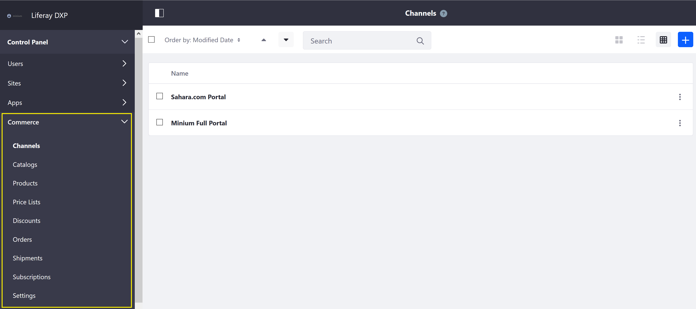
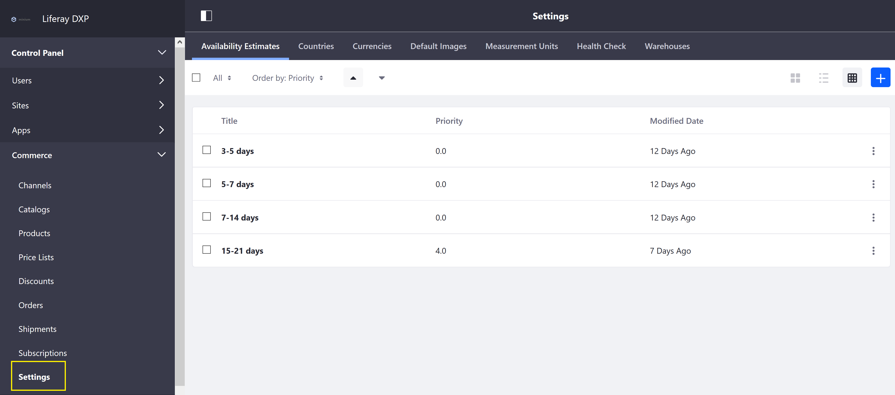
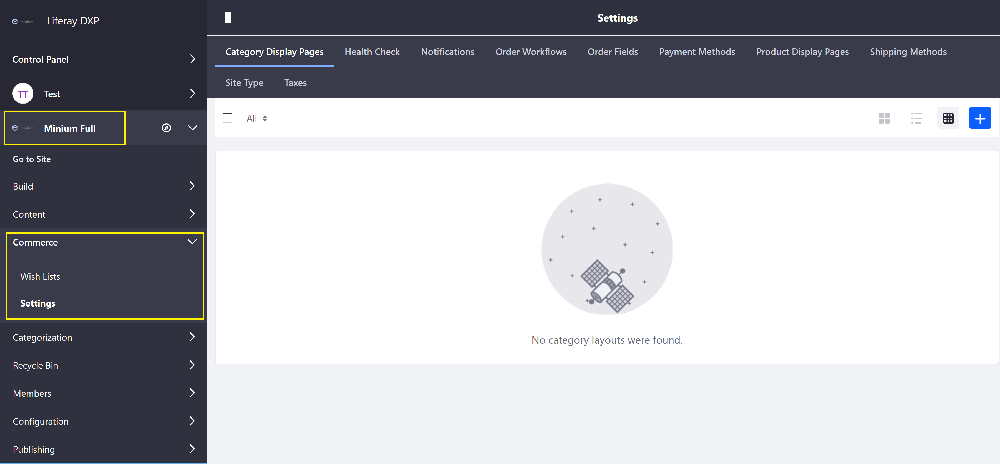

Liferay Commerce Configuration Overview¶
Liferay Commerce configurations are divided into several locations in the Liferay Product Menu. The Commerce Control Panel drop down contains configurations and settings that apply globally to the Liferay Commerce installation. The Commerce Site Menu drop down contains configurations and settings that are scoped to a specific store site.
Commerce Control Panel¶
Navigate to the Control Panel → Commerce. Making changes to any of the follow configurations will apply across the store sites.

- Channels
- Catalogs
- Products
- Price Lists
- Discounts
- Orders
- Shipments
- Subscription
- Settings
The Commerce Global Settings menu contains the following tabs:

- Availability Estimates
- Countries
- Currencies
- Default Images
- Measurement Units
- Health Check
- Warehouses
Commerce Site Settings¶
The following configurations are scoped to the selected store site. Changes here are not applied to other stores hosted on the same Liferay Commerce instance.
Navigate to the Control Panel → Store Site → Commerce.

The following site settings are found here:
- Category Display Pages
- Health Check
- Notifications
- Order Workflows
- Order Fields
- Payment Methods
- Product Display Pages
- Shipping Methods
- Site Types
- Taxes